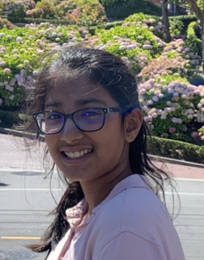

Welcome to Shipra's Online Portfolio
Forensic Anthropologists use their knowledge in Science, Biology, and culture to help provide information of how a victim lived and died. Anthropologists are called to investigate remains and help identify individuals by their bones and physical features. I would like to go in the field of Forensic Anthropology because I would like to help in Federal investigations. Hello, my name is Shipra Deshmukh, I am a student at Fallon Middle, and I enjoy learning about STEM. STEM is an acronym for Science, Technology, Engineering, and Maths. My love for STEM began 6 years ago when I was in second grade, I am currently in eight grade. Every year, starting from second grade, I attended the science fair. I won the third grade, and forth grade science fairs for my projects- "How much sugar is in your drink?" and "Landslides?" My passion for cooking and baking began when I was in second grade as well. I was able to figure out the scientific reactions of the ingredients. Once I was in fourth grade I started coding! I began with Scratch, Makey Makey, and Web development. I am currently learning Python, as well as learning to code websites! In seventh grade, the courses I took were Automation and Robotics, and Medical Detectives. Along my journey I have also done multiple experiments including multiple rough goldberg projects, snap circuits, mechanos, legos, etc.
